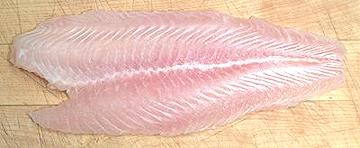
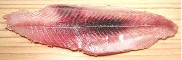

On the Internet, there are more outright lies about these fish than just about any other food item - lies spread mainly by unethical catfish farmers who, faced with competition, chose smear campaigns and political manipulation rather than improving their methods to compete. See Catfish Wars below.
Is it safe to eat? Yes, it has been confirmed as safe as American catfish by independent testing labs, major food distributors (and their insurance companies), and the U.S. Federal Government. They are very low in mercury and are also also easier on the environment than most farmed fish. They are omnivores and can be grown on mostly vegetable matter rather than the wild caught fish and crustaceans many other farmed fish require.
Vietnamese catfish, a genus known as "Shark Catfish" from their shape, are quite different from American Channel Catfish. It takes quite a bit of careful trimming to make fillets that are interchangeable with American fillets. They still vary slightly, being wider, thinner and more delicate in flavor and texture. In the Mekong these fish can grow to over 3 feet long, but farmed fish are harvested much smaller. The photo specimen, P. bocourti, was 17-1/4 inches long and weighed 2 pounds 6 ounces.
Two varieties are widely farmed, Basa (P. pangasius) and Swai / Tra (P. hypophthalmus), but what is shipped to the U.S. is mostly Swai. Basa is preferred in Vietnam but, since U.S. buyers don't care, the faster growing Swai is shipped. Swai fillets are thinner and a little coarser than Basa.
More on Catfish.
 Pictured to the left is the form you will find sold in markets here in North America - nicely cleaned and frozen fillets. This form is described by exporters as: "belly off, fat off, red meat off".
Fillets can weigh anywhere between 2 ounces to over 11 ounces, but
they are sold in bags containing only a single size. These fillets can
be used in place of regular catfish, or for many fish recipes not
traditionally used with catfish. Most Americans don't even know Swai
is catfish. The fillets are light in flavor (just a bit too light in
my opinion), and stay firm enough for most methods of cooking where
fillets are called for.
Most Americans have never seen a Basa or Swai in it's natural form. Nor had I, but back in early 2011 I felt myself fortunate to find frozen ones in a very large Asian market here in Los Angeles. Now, over a year later, they are easily found on ice in the Philippine markets. The 2011 model was very skillfully factory cleaned by making a small cut under the jaw. For the photo and uncleaned weight I reversed this by stuffing the fish with wet paper towels.
Like any other catfish, Basa and Swai have no scales (so are not kosher). They are fairly easy to clean and fillet, though there is a heavy bone extending from the top of the head up to the dorsal fin. It's best to fillet from the top down to the backbone, then over the backbone from the tail forward. Cut the rib cage away from the backbone with kitchen shears. I then shave the ribs off the belly with the filleting knife, if I have a use for the fatty belly. There are no centerline pin bones to deal with - the filets will be entirely bone free.
The photo shows the fillet cut from the Basa at the top of the page,
including the first trimming cuts. At the top of the photo is the part
that is further prepared for export to North America. Bottom left is
the belly, which is mostly fat and not particularly appetizing. Lining
the inside of the belly are additional large deposits of fat, some of
which is shown to the lower right. In Vietnam, local uses are found
for these offcuts.
 For many uses you will want to remove the skin, because it has a stronger taste and shrinks significantly when heated, enough to curl the fillets. Skinning these fillets is very easy by the long knife and cutting board method - the skin is strong and cooperative.
For some uses, particularly catfish soups, the skin is left on. In Vietnam the famous Sweet and Sour Catfish Soup is made with cross cut steaks with skin and bones. I usually cut up skin-on fillets for these soups.
To the left is shown the skin side of a skin-off fillet, displaying the considerable amount of "red meat". This has a stronger, more oily taste, and is removed for the fillet to be in the form usually exported. I don't know how they do that, but they do a very nice job of it. For most catfish uses I prefer the red meat left on so the fillet has more of a catfish taste. These days I usually buy a frozen fish that has been cleaned and beheaded, but is otherwise whole with skin on. These are available from the huge San Gabriel Superstore here in Los Angeles.
I was surprised to find the head, bones and fins simmered for 1/2
hour made a quite serviceable stock without a strong flavor.
Seeing competition from Vietnam, American catfish farmers organized an expedition to that country to gather dirt for a propaganda campaign. They found no dirt. As one catfish man said, "We went expecting to find catfish raised in polluted waters and processed in primitive facilities. That's not what we found, and we're scared to death".
With the actual truth solidly against them by their own admission, American catfish farmers have proven less ethical than even the Congress critters they seek to "influence". They have succeeded in getting legislation passed interfering with imports of Vietnamese fish, though that success has turned into a sort of comedy of errors. They have also spread lying articles all over the Internet, some so absurd only Tea Party members could believe them. Their advertising campaigns have been denounced as deception and half truths even by the U.S. Government.
Some Internet articles have even played the "mercury in fish" card. Mercury is a problem only with large predatory fish living in the oceans - and not much of a problem even there. Vietnamese catfish is a freshwater fish and not a predator, so mercury is not a concern.
At the behest of the catfish farmers, Congress passed a law that only "Channel Catfish" could be called "Catfish" in the United States, preventing some 2000 other species of catfish from being called catfish. Distributors briefly called Vietnamese catfish "China Sole", but that was a bit deceptive, so they settled on "Basa". That was also a little inaccurate, because what was being shipped here was mostly Swai. Americans can't tell the two apart, but the Vietnamese can, and keep the Basa for themselves. Vietnamese catfish is now packaged and sold mostly as "Swai", which is accurate.
The major effect of this name change is that Americans who think they don't like catfish now buy this fish and enjoy it - but it gets even worse for the catfish farmers. The Chinese started raising Channel Cat for export to the United States. As is usual in Chinese practice, the product was often adulterated. This caused the Feds to require extra testing (at extra cost). Knowing the Chinese would find a way to sneak their fish in disguised as American raised catfish, the testing is required for all catfish. This means added cost for American catfish growers as well.
Now, guess who's catfish doesn't need to pay the inspection cost because it can't be called "Catfish". So the catfish farmers went back to Congress asking for the Vietnamese to be forced to call their product "Catfish". They also asked for import control to be transferred from the FDA to the USDA, a process that could have stopped Vietnamese imports for up to three years. Both these efforts have failed - so far.
Of course the American catfish industry is actually suffering, and production has declined, but it's not primarily from Vietnamese competition. The main cause is much higher feed costs resulting from Congress's brain dead "Food into SUV Fuel" ethanol program.
sf_catvnz* 110310 - www.clovegarden.com